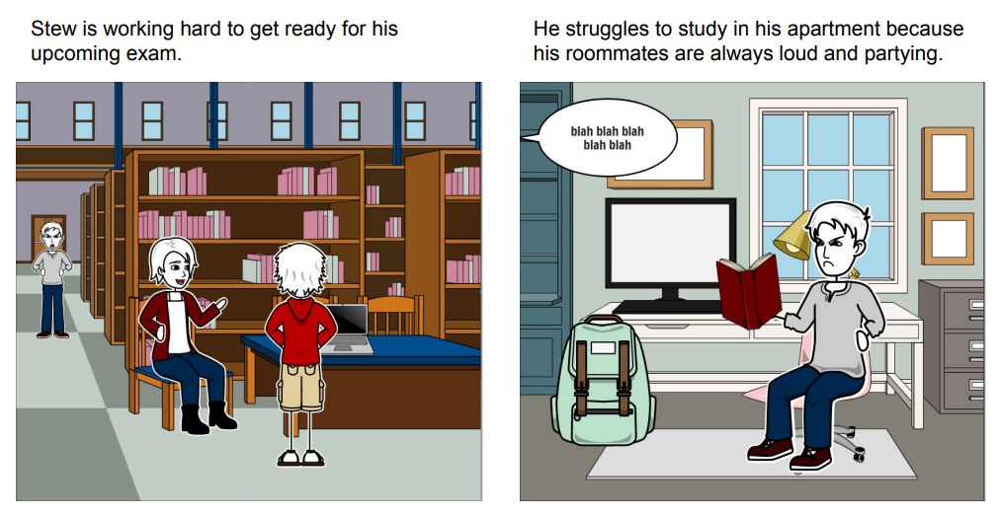
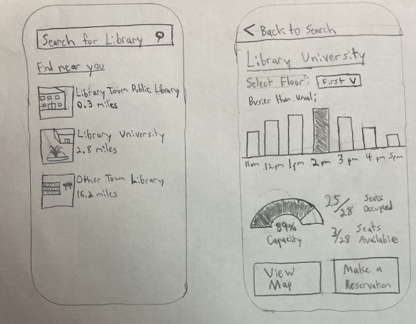
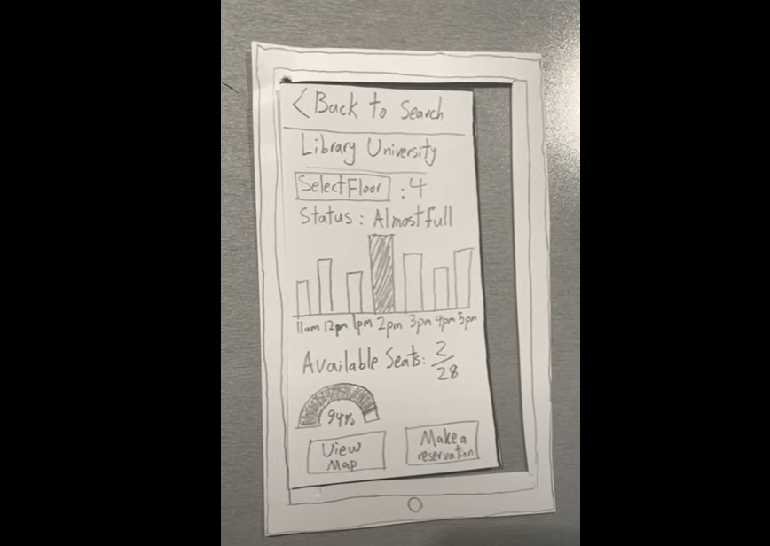
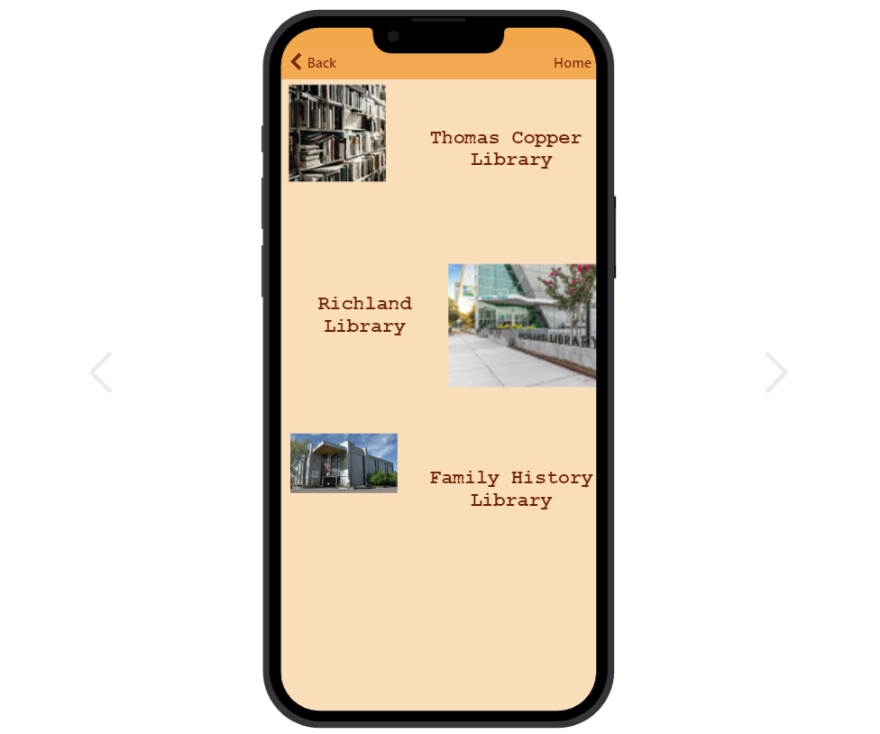

Problem Statement: Library Seating

University libraries can often be very crowded making it difficult for students to find an open seat to study. Our solution should allow students to know when there is open space in the library.
Affinity Diagram: Library Seating

My group and I brainstormed all possible ideas fora library seating app.
Personas

Personas of people that would typically use a library seating app.
Storyboards
Storyboards of people that would typically use a library seating app.
Sketches
Rough ideas of how the application may look.
Paper Protype
A paper walk through of the potential look of every screen in the app.
Hi-Fi Protype
A high fidelity prototype of the library seating app.